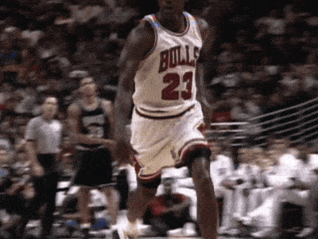

Alexis Sánchez:
Cuando Alexis cumplió 8 años el hermano de su padre biológico le pidió a Martina llevárselo a vivir con él y su mujer a Rancagua para participar en la escuela de fútbol del Universidad Católica.
El joven jugador no se adaptó y a los pocos meses regresó a su hogar, tras tratar de ganar algún dinero limpiando coches y sin medios para estudiar vio en el fútbol la llave para salir de la pobreza.
En 2003 el Cobreloa se lo llevó a su escuela de fútbol de Santiago de Chile y el resto es una historia ya por todos conocida.
Biografia en la Imagen del jugador.

Michael Jordan:
Durante su segundo año de bachillerato, años antes de convertirse en uno de los basquetbolistas más famosos del mundo, Michael Jordan fue rechazado
del equipo de básquet de su escuela. Aquí una de sus frases más famosas: ‘He fallado una vez tras otra en mi vida. Y es por eso que he triunfado’.

Los Beatles:
Antes de alcanzar la fama, la banda inglesa consiguió un contrato con la productora Decca Recording,
que grabó 15 de sus canciones. Sin embargo, los productores no quedaron complacidos con el grupo y les dijeron: ‘No nos gusta cómo suenan, no tienen futuro en la música’.